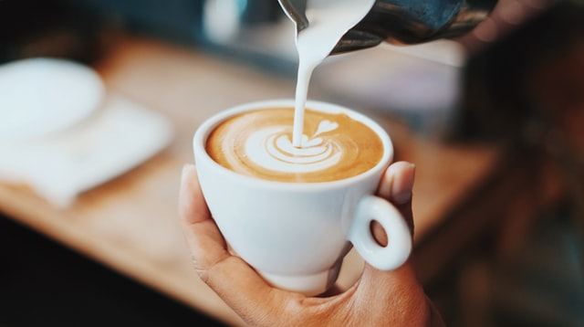

-
1. Italian soda at Bytes
Near Block A, CCET(DG), Sector 26
When's the last time you've had an Italian soda? It had been a while for me, but I wanted to join my friend for a non-caffeinated beverage at Bytes and I became reaquainted with the combination of fizzy water and artificial fruit syrup. Italian sodas are not so sweet as a normal soda and not so boring as a flavored carbonated water. The Italian sodas at Bytes also have no cream in them (or maybe they do if you ask; I haven't tried), which makes it a nice coffee shop alternative for the times when you're feeling a refreshing drink that doesn't have caffeine or milk.
Recommendation: Raspberry Italian soda

-
2. Bubble tea at Pop Tea Bar
Near Block A, CCET(DG), Sector 26
Nubz is cafe/bar newly opened in sector 26. The interiors are done well with a mixture of modern age designing with classic old school comfort. The place is divided into three areas basically which is the indoor lounge, the outdoor and rooftop seating.
The inner seating area is shady and gives a classic tone to the restaurant where as the outdoor seating is comparatively more modern with Graffiti's and funky wall frames. An ideal place to chill and relax.
-
Coming to the food i got a chance to try a wide spread from the menu.
- Veg starters
- Tandoori Momos
- Paneer tikka kaali Mirch
- Wok tossed veggies
- Veg gallauti kebab
- Crispy shittake mushrooms
Recommendation: Classic Milk Tea with tapioca + an order of popcorn chicken.

-
3. Latte at CoHo
Near Block A, CCET(DG), Sector 26
I can't tell you whether CoHo has a particularly amazing Vanilla Bean Latte, only because CoHo is the only place I've ever ordered a Vanilla Bean Latte from. I'm not even totally sure I know what a Vanilla Bean Latte is supposed to taste like. What I do know is the Vanilla Bean Latte I ordered on a whim from CoHo was delicious.
Recommendation: Vanilla Bean Latte
 -
4. Agua Fresca at Nexus Cafe
Near Block A, CCET(DG), Sector 26
Nexus Cafe has a lot of tasty things packed into its cafeteria space, including agua fresca! Grab a cup of this fresh and fruity beverage before you head to the check out line. Nexus Cafe has plenty of indoor and outdoor seating, too, so on the next sunny day, take a break on the patio with a cup of agua fresca, and maybe a burrito.
Recommendation: Agua Fresca

CCET (DG) : Top 4 On-Campus Beverages

Gavish Goyal
Last Updated Feb 25 , 2022